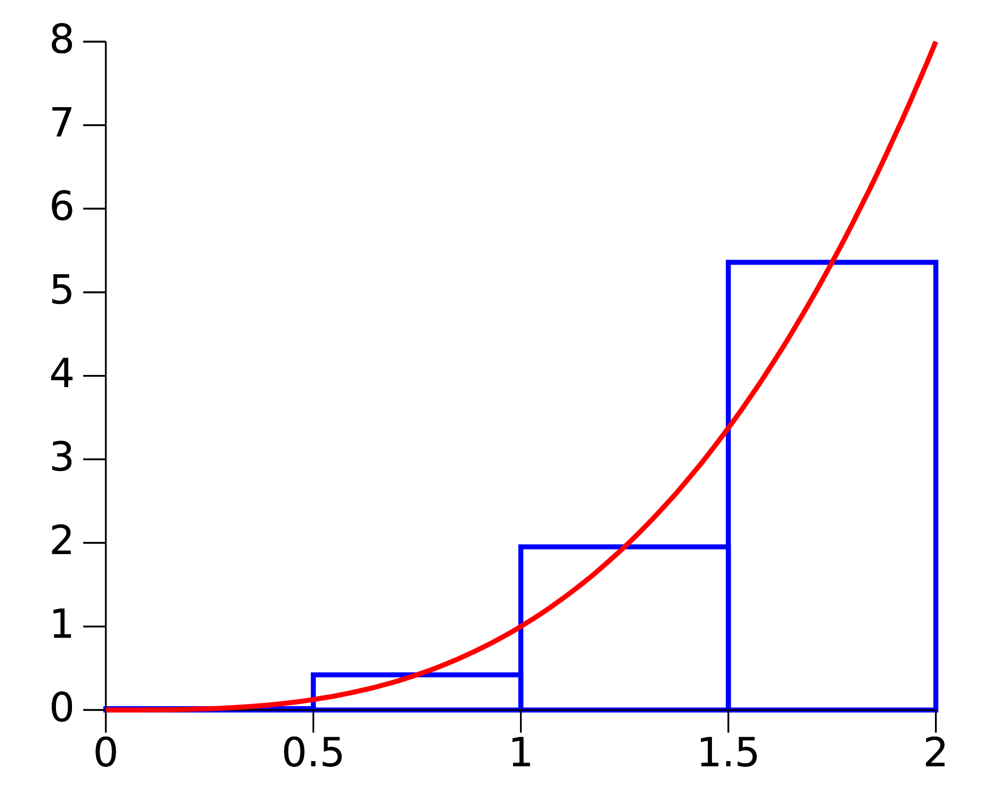

Group Homework Assignment - Day 6#
Discussion#
Read chapter 2 of Think Python.
As you read through the chapter, thing about what the equivalent C++ code would be, and if there are any differences in the way you would write the code, or in errors that you would get.
The Python interpreter
Code in this book sometimes indicated with >>>. This means you should type python in your terminal to open the interative Python interpreter to run the code.
Answer the following questions:
What does an assignment statement look like in Python? In C++? What are the differences?
The chapter says that Python variable names can not start with a number. Is the same true for C++ variable names?
What is an expression? Give an example of an expression Python and in C++.
Compare using code a for loop that counts to 10 in Python and C++. Write at least three sentences about how the loops are the same or different.
Is there an interactive interpreter for C++? Why or why not?
Complete Exercise 1 from chapter 2 with both Python and C++.
Include your write up in your homework assignment with in a file called
lastname_firstname_answers.md.
Coding Assignment#
Your assignment is to again approximate the integral from the first individual assignment, however this time using the midpoint method in C++. The integral you are looking to evaluate is:
This integral will evaluate to $\(\frac{\pi}{4} \)$.
This is a group project, to be written in C++. The group should discuss the answers to the questions and write the README for the project repository.
The best way to do this assignment is for one person to share their screen and write the code while discussing the questions; the rest of the group should be copying the final code into their own files, and perhaps helping debug the code on their machine if issues arise.
Integration via Summation (Riemann sum)#
The midpoint rule (a method of the Riemann sum) is a method to approximate the value of an integral via summation. In this method, the integral is approximated via calculating the area of rectangles whose height is determined by evalulating the integrand at the midpoint of the rectangle.
The figure above shows the approximation for $\( \int_{0}^2 x^3 dx \)$. The (approximated) value of the integral consists of the sum of the area of the blue rectangles.
Steps & Questions#
Below are the steps you should follow and discuss within your group. The key to this project is thoroughly thinking through the concepts, after which the code is straightforward.
Write a C++ function to evaluate the integrand $\(\frac{1}{1 + x^2}\)$. This function should take x as the only argument and return the value. Note C++ does not have the ** operator for exponentiation. Just multiply x by itself. Q: What type should be used for x and the return type?
You will be writing a function that takes the bounds of the integral a,b and the desired number of integration points, and returns the approximated value of the integral. Q: What should the types of a,b and npoints be? What type should the function return?
Given the bounds of integration a,b and the number of points, what is the width of the rectangles you will be using? Write this in terms of a,b, and npoints. We will call this dx
At what points will you need to evaluate the integrand? This should be written in terms of a,b, and dx.
Now you can write the integration function. You will not need to precompute the integration points - you can determine them on the fly. Write a
forloop over the number of points, and evaluate the integrand using the function you wrote in Step 1 at the points determined in the previous question. For each point, calculate the area of a rectangle centered on that point, and sum these areas all the areas into a variable. This variable represents the approximated value of the integral.Call this integration function from
mainand print the result. Compare, for example, with your first homework by calling your function with a=0, b=1, and some number of points (50 or so). The result should approach $\(\frac{\pi}{4} \)$ as the number of points is increased. About how many points does it take to start converging to the proper result (4 decimal places)?
Discussion Questions#
What kinds of projects are best suited for C++? What about Python?
Can you think of a use case for mixing both languages (that is, a single project that somehow uses both C++ and Python)? What would each language do in such a project?
We have now seen the Monte-Carlo method and the Riemann Sum method for approximating integrals. You will notice that the number of integration points for the Riemann Sum method is much less than the Monte-Carlo method. Why would you ever use the Monte-Carlo method?